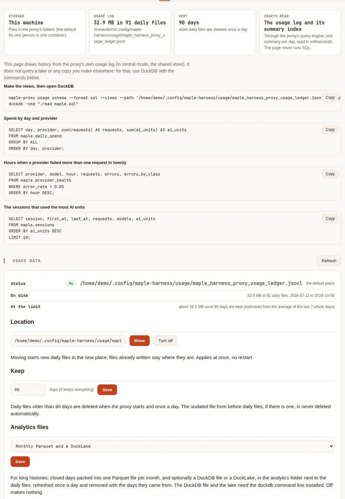
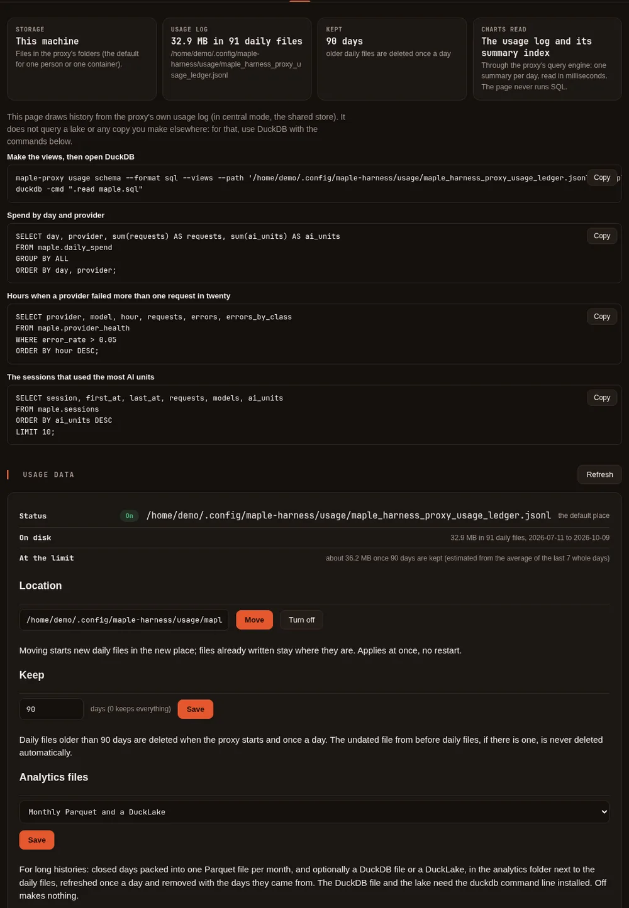

Your data: where it lives and how to query it #
On this page
Every request that goes through the proxy leaves one usage record: counts and labels, never content. This page is the map: what is recorded, the three places that data can live, which one to use, how it moves between them, and what that costs to run. The details are on their own pages: Query your usage is the cookbook, and The Maple data lake sets up the lake.
If you run Maple alone on one machine, the short version is: nothing to set up. The daily files are already there,
and maple-proxy usage query already answers questions from them.
In plain words #
- What it is. Where your usage history lives: daily files on this machine (the default), PostgreSQL for a team with several replicas, and an optional lake for years of history.
- What to do alone on one machine. Nothing: the files are already there. The setup page's Data & storage tab says where, how much and for how long.
What is recorded, and what never is #
One record per request, with:
- what was asked for and what answered: the model the client asked for, the provider and model that answered, and whether a fallback stepped in;
- how big it was: input, output and cached tokens, and the AI units the provider reported;
- how long it took, and how it ended: fine, failed (with a fixed class such as
rate limited), answered by a fallback or from the response cache; - who sent it: the kind of client and its version, the access token's label, the session, and, once people are set up, the person and team;
- for chained proxies, which proxy recorded it and where the request started;
- estimates, always named
_estimated, never bills.
Never recorded: prompts, answers, files, tool results, keys or tokens. Every copy described on this page (the monthly Parquet files, the DuckDB file, the lake, PostgreSQL) holds the same records and nothing more. The full column list is in The usage record schema.
The three places your data can live #
The daily files: the default #
The proxy writes one file per UTC day into the usage folder of its config folder (~/.config/maple-harness/usage/
on Linux and macOS), and keeps 90 days unless you change server.usage_retention_days. This is how a single user, or
a single container, keeps its data, and it is all most people need. maple-proxy usage query, the setup page and
DuckDB read these files directly. Moving, keeping and exporting them: Your usage data.
On one machine there are also two optional copies for faster questions over long histories, made from the daily
files: one Parquet file per month (maple-proxy usage compact) and one DuckDB file (maple-proxy usage duckdb). Both
follow the daily files: when retention deletes a day, its rows go from these copies too.


PostgreSQL: teams and several pods #
When several copies of one proxy run behind a load balancer (central mode), each copy
writes its usage into a shared PostgreSQL instead, so every copy, the setup page and usage query see the whole
team's traffic. PostgreSQL is the live database: it holds the recent days (storage.retention_days, by default the
same 90 as server.usage_retention_days) and deletes older ones once a day. Redis, the other store central mode needs,
holds sessions and caches, never usage.
DuckLake: history and analysis, for both #
A DuckLake keeps your usage as Parquet data files plus a small catalog that lists them, and it only ever adds: rows the daily files or PostgreSQL delete later stay in the lake. It is where history longer than your retention lives, and the fastest thing to query over months or years. On one machine its catalog is a file and its data a folder next to the daily files; for a team the catalog is a schema in the same PostgreSQL and the data is on a volume or in S3. Set it up: The Maple data lake.
![For a team, three copies of the same maple-proxy write every copy's usage into one PostgreSQL, which also holds budgets, people and settings and keeps the recent days set by storage.retention_days, by default 90. Redis holds sessions and caches, no usage. Once an hour the usage is copied into a DuckLake that keeps the whole history: its catalog is a schema in PostgreSQL and its data files are Parquet on a volume or in S3, never deleted by the copy. Analysts and dashboards read PostgreSQL for the recent days and the lake for history, read-only, with DuckDB.](../img/docs/data-teams-light.svg)
![For a team, three copies of the same maple-proxy write every copy's usage into one PostgreSQL, which also holds budgets, people and settings and keeps the recent days set by storage.retention_days, by default 90. Redis holds sessions and caches, no usage. Once an hour the usage is copied into a DuckLake that keeps the whole history: its catalog is a schema in PostgreSQL and its data files are Parquet on a volume or in S3, never deleted by the copy. Analysts and dashboards read PostgreSQL for the recent days and the lake for history, read-only, with DuckDB.](../img/docs/data-teams-dark.svg)
On the setup page #
The Data & storage tab says where this proxy keeps its data, how much there is and how long it is kept, with queries to copy into DuckDB, and holds the Usage data card: the location, Keep, Analytics files, Export and Remove old days. Its charts and the other tabs read the daily files (in central mode, PostgreSQL); they never query a lake.
With a lake, the tab also shows its status as the lake's own jobs last wrote it: the last move and how many rows it took in, the rows, data files, size and snapshots in the lake, the last upkeep, and the last error if a job failed. The page reads that status (at most once a minute); it never runs DuckDB. See The Maple data lake.


Which one should I use? #
| You are | Live data | History beyond retention | Query it with |
|---|---|---|---|
| One person, one machine | The daily files (nothing to do) | Raise usage_retention_days, or add a local lake | usage query, the setup page, DuckDB over the files |
| One person who keeps a lot of history | The daily files | A local lake (usage_analytics: lake), or the DuckDB file for speed within retention | DuckDB over the lake or the DuckDB file |
| One container | The daily files on its volume | A local lake on the same volume | The same, in the container (docker exec) |
| A team on one shared proxy | The daily files on the hub | A local lake on the hub | The same, on the hub; people and teams are columns |
| A team on several pods | PostgreSQL (central mode) | A DuckLake: catalog in PostgreSQL, data on a volume or S3 | usage query in a pod for the recent days, DuckDB over the lake for history |
| A hub of hubs | The top hub's files or PostgreSQL, with what the hubs below send up | The top hub's lake | The same; the lake holds every proxy's lines |
The short flow:
- One machine? Keep the daily files. If you want more than a few months of history, or quick answers over a
year, turn on Analytics files (
lake, orduckdbif the retention window is enough) and query with DuckDB. - A team, or several pods? PostgreSQL holds the live data for the proxies, the setup page and
usage query; add a DuckLake for the history and for analysts, and keep PostgreSQL's window short.
Nothing here is required: a team that only needs the last 90 days can stop at PostgreSQL, and one machine can stop at the daily files.
How data moves #
![Proxies below a hub, a laptop proxy and a team hub, send their usage lines up to the hub; a child that cannot reach its parent keeps its lines and sends them later. The hub's live data, in PostgreSQL or its daily files, holds its own usage and the usage sent up from below, and deletes its oldest days after the retention you set. Every hour, lines are copied into the lake, which only adds, each line once; late lines are not missed and a copy cut short is safe to run again. Hourly, lines stored since the last copy go in, in one batch; daily, maintenance merges small files and expires old snapshots; any time, query the live data, the lake, or both, read-only.](../img/docs/data-moves-light.svg)
![Proxies below a hub, a laptop proxy and a team hub, send their usage lines up to the hub; a child that cannot reach its parent keeps its lines and sends them later. The hub's live data, in PostgreSQL or its daily files, holds its own usage and the usage sent up from below, and deletes its oldest days after the retention you set. Every hour, lines are copied into the lake, which only adds, each line once; late lines are not missed and a copy cut short is safe to run again. Hourly, lines stored since the last copy go in, in one batch; daily, maintenance merges small files and expires old snapshots; any time, query the live data, the lake, or both, read-only.](../img/docs/data-moves-dark.svg)
- In batches, not per request. A request is written to the daily file or to PostgreSQL as it ends. The lake is
filled by a job: hourly for a team (the Kubernetes sample's schedule), and once a day on one machine when Analytics
files is
lake(or whenever you runmaple-proxy usage lake). - From where the last copy stopped. Each copy takes what was stored since the previous one. From the daily files that is what each file gained; from PostgreSQL it is the order PostgreSQL stored the rows in, not the time on them, so a line that arrives late with an old time (a hub's backlog from below, a replica that was cut off for a while) is still copied.
- Each line once. The rows and the place the copy reached are written together: a copy that stops part way, or runs twice, adds nothing twice.
- History is never deleted from the lake. Retention deletes old daily files, and PostgreSQL deletes rows older than
storage.retention_days; neither removes anything from the lake. Keep PostgreSQL's window longer than the gap between two copies, so nothing is deleted before it is copied. - Hubs. A proxy with
chain.parentsends its usage records up to its hub, which keeps them apart from its own (see Usage from below). A hub's lake holds both, marked bysource(localorchild).
What it costs to run #
There are no new services to pay for on one machine: the daily files, the monthly Parquet files, the DuckDB file and
a local lake are files on your disk, made by the proxy or by your own duckdb program. What they take:
- Disk. The daily files take about 0.25 to 0.65 KB a request (an estimate from sample lines;
usage statusand the Usage data card show your own). The Parquet copies are smaller than the files they come from. - Writes to object storage. For a team lake with its data in S3, a small copy (up to 10,000 rows, the inlining limit) is kept in the catalog in PostgreSQL rather than written as a new file, so the hourly copies write nothing to S3. The daily maintenance writes those rows out as Parquet and merges small files, so S3 sees a few writes a day, not one per request or per copy.
- PostgreSQL. Its size follows
storage.retention_days: a shorter window keeps it small, while the lake keeps the history. - Maintenance. Once a day; how many snapshots it keeps (30 days by default) decides how far back time travel reaches, and how much older data the lake keeps around.
Estimate your own before you start: --dry-run reads your recent volume and prints what a copy would load and how many
object-store writes a day to expect, and writes nothing.
$ maple-proxy usage lake --dry-run
would load 67,720 new line(s) (41.1 MiB) from 119 daily file(s) into DuckLake (catalog /home/demo/.config/maple-harness/usage/analytics/lake/maple.ducklake; data /home/demo/.config/maple-harness/usage/analytics/lake/data/)
Estimated, from about 550 usage line(s) a day, averaged over the last 7 day(s) and an inlining limit of 10000 rows:
a daily refresh holds about 550 row(s): kept in the catalog, no data file written.
The daily upkeep writes them out: about 1 to 2 file(s) (usage, events), and merging may write 1 to 2 more.
Object-store writes: about 2 to 4 a day.These are estimates from your own volume. What your storage provider charges for them is in its own price list; these pages make no claim about it.
Your proxy's identity key #
Since 2.2 your proxy also keeps local-identity.key in your settings folder (~/.config/maple-harness/ on Linux
and macOS, %APPDATA%\maple-harness\ on Windows). It is a random key, made by the proxy on its first start, readable
and writable only by you (mode 0600); the proxy replaces it if anyone else could read it. It holds no usage, no
prompts and nothing about you: it is how Maple Harness confirms that the proxy it talks to on this machine is yours
(see Connect the harness to a proxy). It is never logged, sent anywhere
or shown on the setup page. Deleting it and restarting the proxy makes a new one; an older proxy ignores it.
Where to go next #
- Query your usage: tested recipes for
usage query, DuckDB over the files, the DuckDB file, the lake and PostgreSQL, and exports to spreadsheets. - The Maple data lake: set up a lake on one machine or for a team, maintenance, time travel, backups.
- See and filter your usage: the filters, the ready-made views, the events log.
- Your usage data: where the files are, how long they are kept, every column, exports, Grafana.
- Run the proxy on Kubernetes: central mode, PostgreSQL and Redis, and the lake's CronJobs.
- Chain proxies into hubs: usage from proxies below a hub.